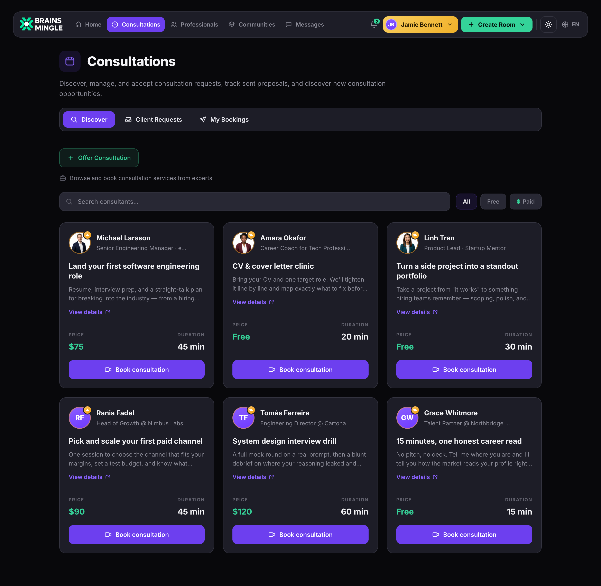
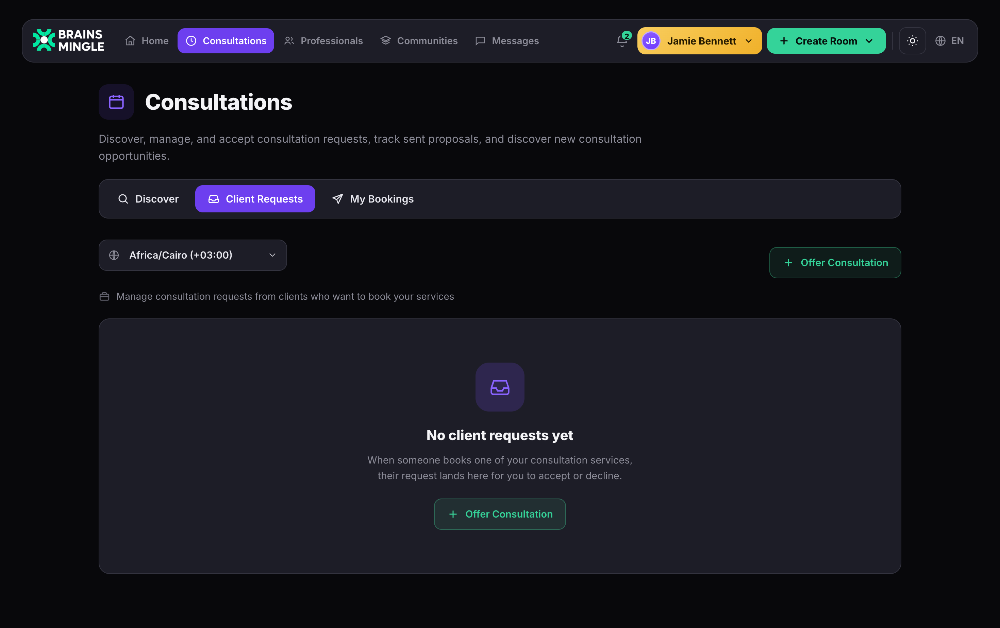
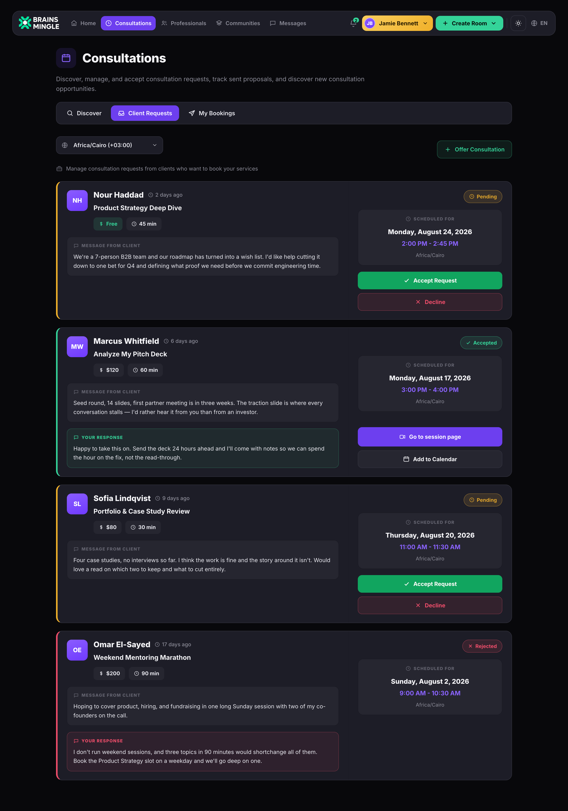
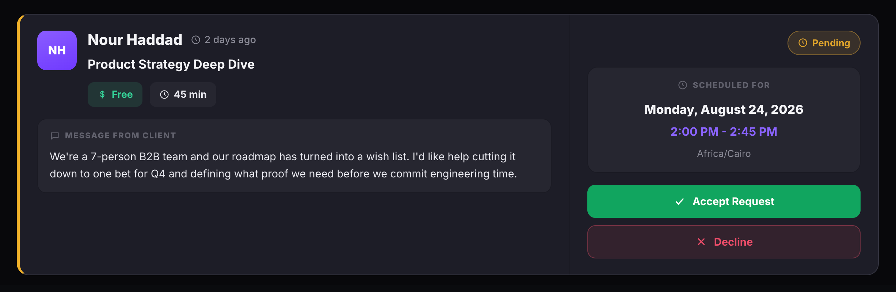
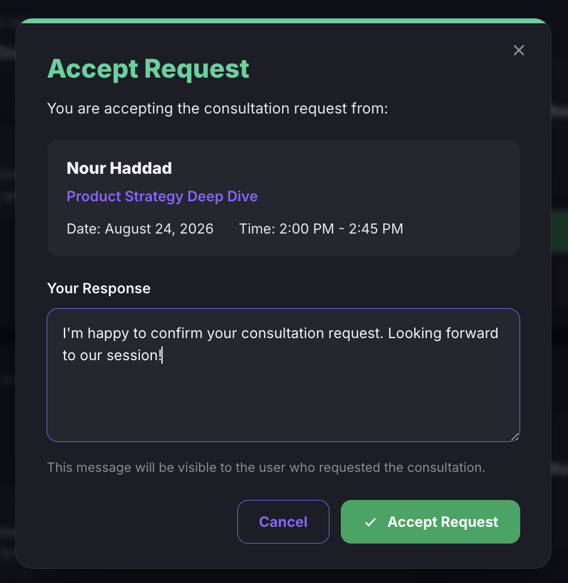
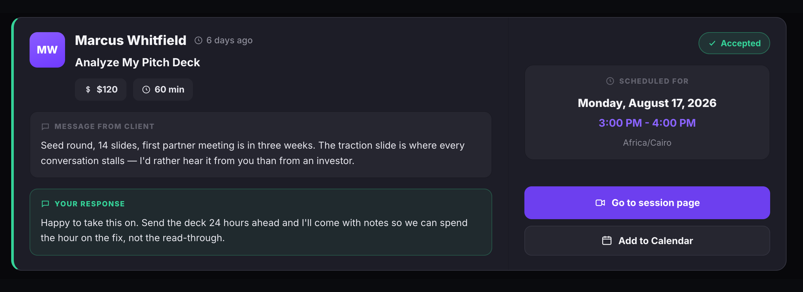
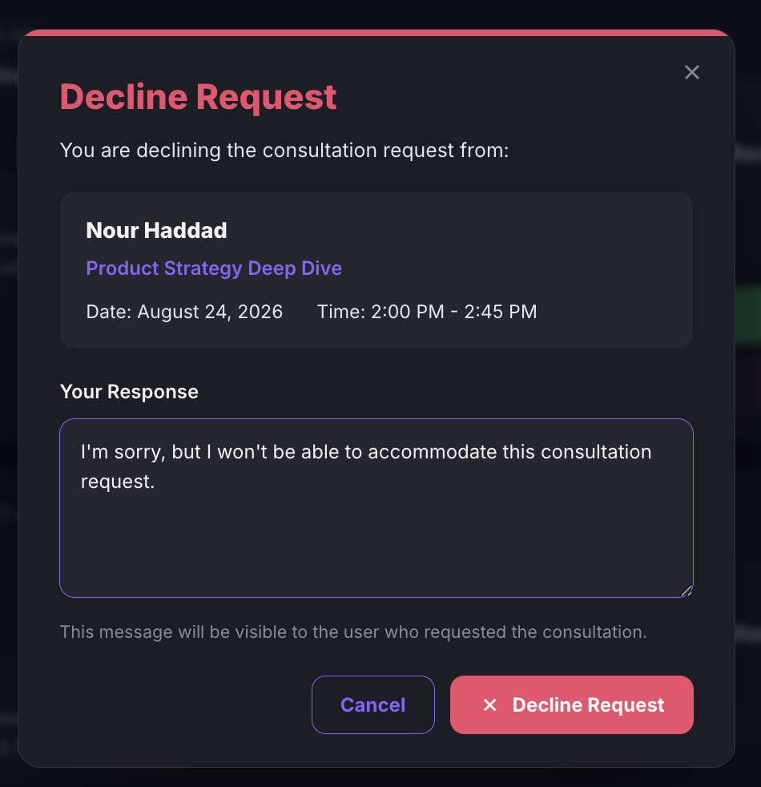
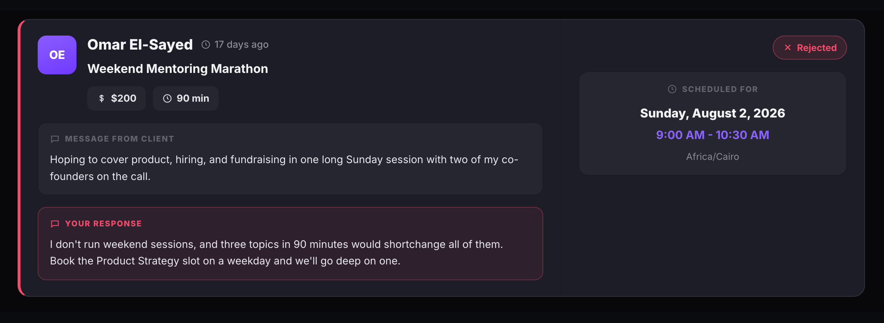
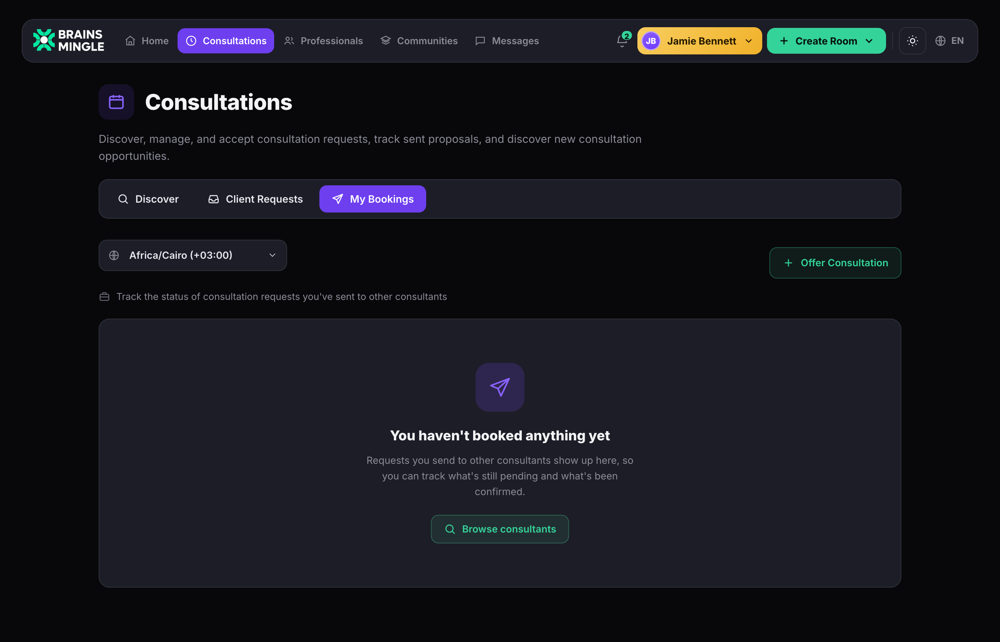
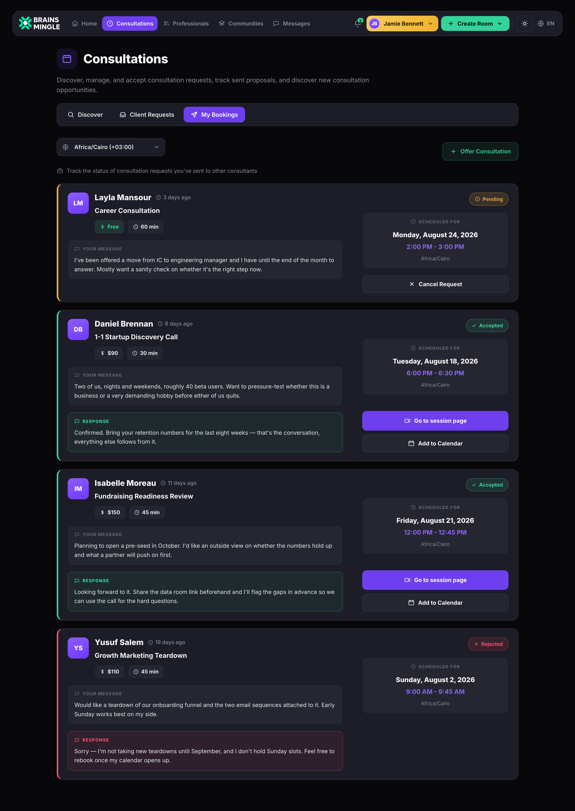

Manage consultation requests and bookings
Review incoming booking requests from clients, accept or decline them, and track the status of consultations you've booked with other experts — all from the Consultations page.
Before you get started
- To receive client requests, you need at least one active consultation service. See Set up consultation services.
- To book other experts, browse available consultants from the Discover tab on the Consultations page.
Review client requests
When a client books one of your consultation services, the request appears in your Client Requests tab. You can review the details and accept or decline each request.
- Click Consultations in the top navigation bar.
- Click the Client Requests tab.


When clients book your services, their requests appear here with full details.

- Each request card shows:
- Client name and when the request was sent.
- Service title, price, and duration.
- Scheduled date and time in the client's selected timezone.
- Message from client — an optional note the client included when booking.
- Status — Pending until you take action.
Review a pending request
A new request arrives with Pending status. The card shows the client's name, service title, price, duration, scheduled date and time, and the client's message. Click Accept Request to confirm or Decline to turn it down.

Accept a request
- On the request card you want to confirm, click Accept Request.
- In the Accept Request modal, review the client name, service title, date, and time.
- Under Your Response, type a message to the client. This message will be visible to the client.
- Click Accept Request.

The request card updates to Accepted status. Your response appears below the client's original message, and two new buttons appear: Go to session page and Add to Calendar.

Decline a request
- On the request card you want to turn down, click Decline.
- In the Decline Request modal, review the client name, service title, date, and time.
- Under Your Response, type a message to the client. This message will be visible to the client.
- Click Decline Request.

The request card updates to Rejected status. Your response appears below the client's original message.

After accepting or declining requests, the updated list reflects each request's current status.
Track your bookings
When you book a consultation with another expert, the request appears in your My Bookings tab so you can track its status. You cannot accept or decline from this tab — the expert responds from their side.
- Click Consultations in the top navigation bar.
- Click the My Bookings tab.

When you book consultations with experts, your requests appear here with full details.

- Each booking card shows:
- Expert name and when the request was sent.
- Service title, price, and duration.
- Scheduled date and time in your selected timezone.
- Your message — the note you included when booking.
- Status — Pending until the expert accepts or declines.
When an expert responds, the card updates automatically. Accepted bookings show the expert's response along with Go to session page and Add to Calendar buttons. Rejected bookings show the expert's response with no further actions.